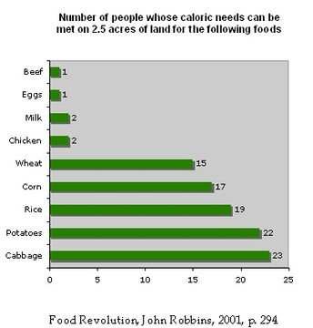

Why Veg
SOME REASONS TO BECOME VEGAN/VEGETARIAN:
For the Planet
- Raising animals for food generates more greenhouse gases than cars & trucks.
- 80% of ammonia emissions in the U.S. come from animal waste.
- Farm animals produce 130 times more waste than humans in the United States.
- The #1 source of pollution in our waterways comes from agricultural runoff. Farm animals eat 70% of all the grain in the United States.
- It takes 2400 gallons of water to produce 1 pound of cow flesh vs. 180 gallons of water to make 1 pound of whole wheat flour. Farm animals are the primary consumers of water in the United States.
For the Animals
- Farm animals are affectionate, playful, intelligent, and unique individuals.
- Farm animals feel pain and suffer in the same way as dogs and cats.
- About 10 billion land animals are slaughtered every year in the USA for food.
- Pigs have higher cognitive abilities than 3 years olds.
- Factory farms treat animals as commodities: Animals are burned, castrated, mutilated, and violently killed without anesthesia.
For Your Heath
- Vegetarians are 25-50% less likely to suffer from cancer.
- Meat eaters are 9 times more likely to be obese than vegans.
- Vegetarian diets help prevent heart disease.
- Vegan foods provide us with all the nutrients that we need, including protein.
- It is the position of the American Dietetic Association and Dietitians of Canada that appropriately planned vegetarian diets are healthful, nutritionally adequate and provide health benefits in the prevention and treatment of certain diseases.
REFERENCES
For the Planet:
- U.N. News Centre, “Rearing Cattle Produces More Greenhouse Gases Than Driving Cars, U.N. Report Warns,” 29 Nov. 2006.
- State of North Carolina, Department of Environment and Natural Resources, “Review of Emission Factors and Methodologies to Estimate Ammonia Emissions From Animal Waste Handling,” U.S. Environmental Protection Agency, Apr. 2002.
-
- Ed Ayres, “Will We Still Eat Meat?” Time 8 Nov. 1999.
- U.S. Senate Committee on Agriculture, Nutrition, and Forestry, “Animal Waste Pollution in America: An Emerging National Problem,” Dec. 1997.
-
- U.S. Senate Committee on Agriculture, Nutrition, and Forestry.
- Food Revolution, John Robbins, 2001, p. 292
-
- Marcia Kreith, “Water Inputs in California Food Production,” Water Education Foundation 27 Sept. 1991.
- Rick Grant, “Water Quality and Requirements for Dairy Cattle,” NebGuide, Cooperative Extension, Institute of Agriculture and Natural Resources, University of Nebraska-Lincoln, 1996.
For the Animals
- United States Department of Agriculture (USDA). National Agriculture Statistics Service.
- New Slant on Chump Chops,” Cambridge Daily News, 29 Mar. 2002.
For Your Health
- J. Chang-Claude et al., "Mortality Pattern of German Vegetarians After 11 Years of Follow-Up," Epidemiology 3 (1992): 389-91.
- John Robbins, The Food Revolution, Conari Press: Boston, 2001, p. 58.
-
- L.E. Kelemen et al., "Association of Dietary Protein With Disease and Mortality in a Prospective Study of Postmenopausal Women," American Journal of Epidemiology 161 (2005): 239-49.
- Sacks FM, Castelli WP, Donner A, Kass EH. Plasma lipids and lipoproteins in vegetarians and controls. N Engl J Med 1975;292:1148-52.
- Hardinge, M., et al. Nutritional studies of vegetarians, Part V, Proteins. Journal of American Dietetic Association 1966; 48(1):27; and Hardinge, M., et al. Nutritional studies of vegetarians: Part I. Journal of Clinical Nutrition 1984; 2(2):81.
- Academy of Nutrition and Dietetics (formerly American Dietetic Association). www.eatright.org
